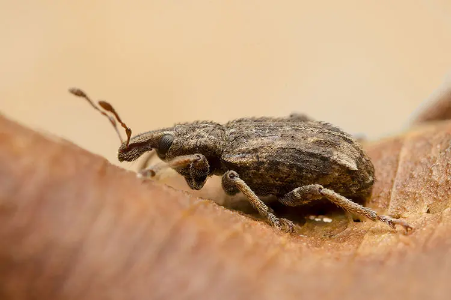
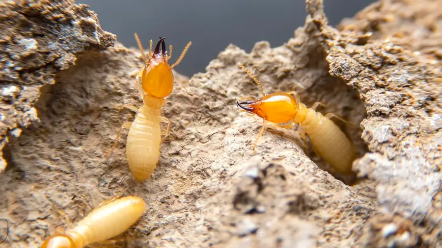
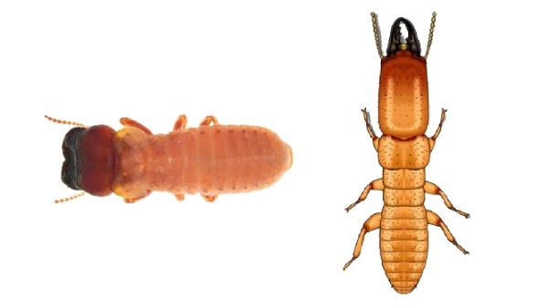
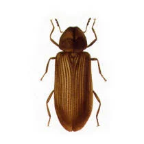

Los xilófagos son insectos que se alimentan de madera, causando daños estructurales graves. Detectarlos a tiempo es clave para evitar costosas reparaciones.

Carcoma
La carcoma (Anobium punctatum) perfora la madera creando galerías internas. Sus daños suelen detectarse por los pequeños orificios de salida y el serrín fino.

Termitas
Las termitas son insectos sociales que pueden consumir grandes cantidades de madera. Requieren tratamientos profesionales inmediatos para evitar daños estructurales severos.
Los insectos xilófagos son organismos que se alimentan de madera, causando graves daños estructurales en edificios, mobiliario, vigas y estructuras de madera. Las termitas, en particular, pueden pasar desapercibidas durante años mientras devoran la madera desde el interior, comprometiendo la seguridad de las construcciones.
En AZeta Plagas 3D realizamos inspecciones especializadas con equipos de detección avanzada, aplicamos tratamientos con cebos y barreras químicas, y ofrecemos garantías de seguimiento para proteger tu patrimonio frente a estos destructores silenciosos de la madera.

Termita Subterránea
Reticulitermes spp. La más peligrosa, ataca desde el suelo construyendo tubos de barro hasta la madera.

Termita de Madera Seca
Cryptotermes spp. Vive directamente en la madera sin contacto con el suelo, difícil de detectar.

Carcoma Común
Anobium punctatum. Sus larvas perforan galerías en maderas blandas, muebles antiguos y vigas.
Señales de infestación por xilófagos:
- Pequeños agujeros circulares en la madera (orificios de salida)
- Acumulación de serrín fino cerca de muebles o vigas
- Madera que suena hueca al golpearla
- Presencia de alas de insectos cerca de ventanas o puertas
- Madera que se desmorona fácilmente al tocarla
- Túneles visibles en el interior de la madera